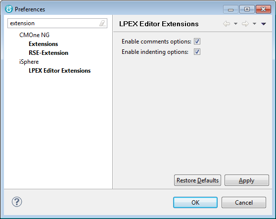
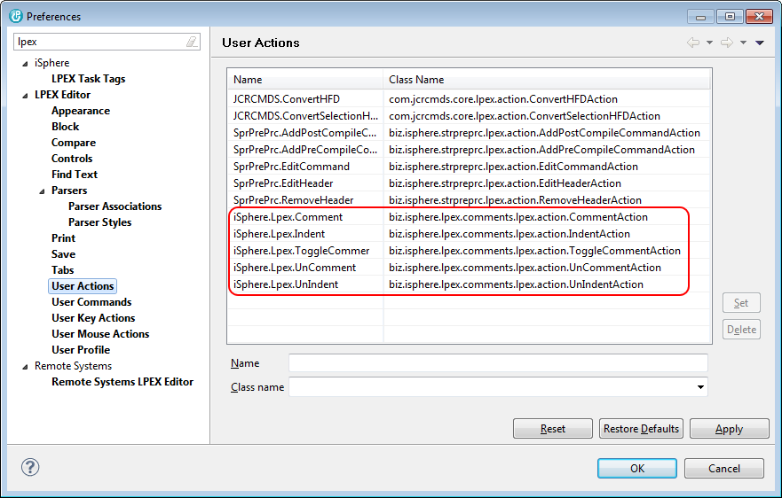
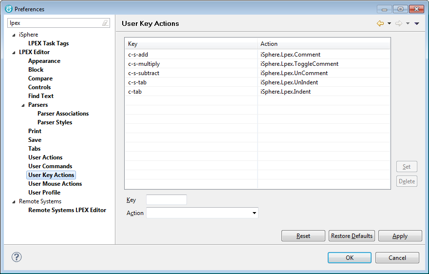

The available options are:
| Enable comments options | - | Enables options for commenting and uncommenting source lines. |
| Indenting options enabled | - | Enables options for indenting and unindenting source lines. |
| Note: Changing one of these options requires restarting RDi to take effect. |
The installed user actions are shown on the User Actions preferences page of the Lpex editor:

The associated user key action are shown on the User Key Actions preferences page of the Lpex editor:
